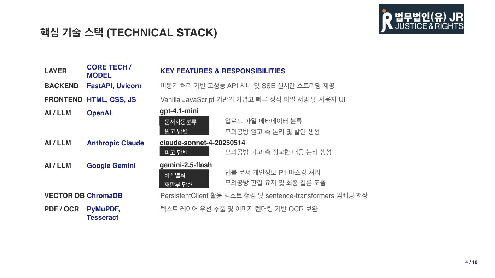

변호사의 일은 대부분 서류다. 그런데 문서 검토나 개인정보 가리기 같은 단순 반복 작업이 전체 업무의 60% 이상을 차지해, 정작 중요한 일인 법률 쟁점 분석과 소송 전략 짜기에 쓸 시간이 부족했다. 손으로 하다 보면 실수도 생기고 처리 속도도 느려진다. 기존 국내 리걸테크(법률+기술 서비스)는 판례 검색 수준에 머물러 있어서 이 문제를 풀어 주지 못했다. 대형 로펌은 쌓아 둔 자료를 절대 공개하지 않고, 개인정보 문제로 법원의 판례 전면 공개도 미뤄지고 있어 좋은 학습 데이터 자체가 부족한 상황이었다.
발표자는 10년 이상 경력의 변호사 8명과 함께 로펌을 세우면서, 자매 회사로 AI 개발사 이그니스 랩을 만들어 개발자들과 손을 잡았다. 시스템의 흐름은 이렇다. 소송 서류 PDF를 올리면 OCR(이미지 속 글자를 읽어내는 기술)로 텍스트를 뽑고, 개인정보를 자동으로 가린 뒤(비식별화), 벡터 DB(뜻이 비슷한 문서를 찾아 주는 저장소)에 넣어 비슷한 사례와 쟁점을 검색한다. 핵심은 그다음이다. 원고 역할은 ChatGPT, 피고 역할은 Claude, 판사 역할은 Gemini가 맡아 다섯 번을 서로 반박하며 공방을 벌인 뒤 판결까지 예측한다. 우리가 원고라면 상대편이 들고나올 수 있는데 미처 생각 못 한 주장을 미리 찾아내는 것이 목적이다. 다만 AI에게 다 맡기지 않고, 무엇을 가릴지 정하는 단계와 결론 검증에는 변호사가 반드시 개입하는 구조로 설계했다.
발표자가 직접 맡아 실제 1심 판결까지 받은 사건의 서류를 전부 넣고 돌려 봤더니, 초반에는 결론이 뒤집히는 오류도 있었지만 데이터를 정리한 뒤에는 실제 판결과 비슷한 결론과 이유가 나왔다. 반복 문서 처리 시간을 80% 줄여 연 1,200시간을 아끼고 업무 효율을 3배 이상 올리는 것이 목표인데, 발표자는 "근거는 저희의 느낌"이라고 솔직하게 인정해 웃음을 줬다. 당사자 이름만 가리면 되는 줄 알았다가 법무법인 이름 같은 정보가 그대로 노출된 시행착오도 있어서, 어디까지 가릴지 기준을 만드는 것이 남은 숙제다. 3년 계획으로 사내 시험 운영에서 시작해 판례 서비스 연동과 보안 인증을 거쳐, 중소형 로펌에 파는 구독형 서비스로 키울 예정이다.